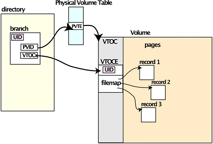
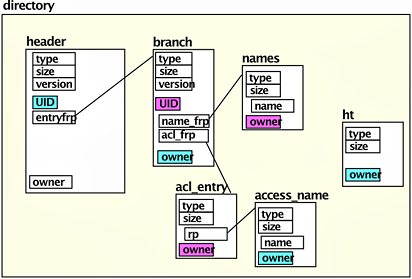

Summary. This note describes strategies Multics used to provide highly available computing and to recover from unexpected program interruptions and system crashes. This note begins with the early 1960s CTSS operating system, and covers Multics recovery procedures developed from 1965 to 1985. Today's systems face new challenges and run on far more capable and reliable hardware, but the strategies employed by Multics are still useful in the design of future file systems.
System Crash Recovery
A system crash occurs when an operating system stops processing abruptly, discarding the work of many running processes. In the early 60s, crashes happened often, triggered by hardware failures, inadequate software recovery from hardware error indications, or by software bugs. Operating systems were designed to crash when they encountered inconsistencies or hardware errors that they could not recover from.
In the 60s and 70s, hardware and software engineers spent a lot of effort eliminating crashes, and reducing the impact on system availability when crashes did occur.
Backup, Reload, and Retrieval

MIT's Compatible Time-Sharing System (CTSS), the predecessor to Multics, recovered from crashes by reloading a fresh version of the operating system and starting it. Users had to log in again and redo work that was lost. If the contents of the system's file storage were damaged, the system operators restored the whole file system from tape. When CTSS was first put into service in 1963, the system was shut down for several hours each day to create backup tapes. Later, CTSS was improved so that backup could be done while the system was in use by timesharing users, by a program known as the Backup Daemon, which could dump all files to create a complete dump, or dump all modified files to create an incremental dump. As an alternative to a complete reload of all files, system operators could retrieve specified files from backup tapes if a crash destroyed only a few files.
The design of Multics began in 1965, building on the CTSS experience. The Multics designers intended to create a prototype "computer utility" providing always-on computing service to a large community. The Multics file system added many features, and was integrated with the virtual memory system. It inherited the CTSS approach to file system backup and recovery. The Multics backup daemon was a system process that traversed the file system directory tree, copying files to magnetic tape. As in CTSS, the Multics backup daemon, written in 1967, could do a complete dump or an incremental dump, and recovery could be done by reloading a complete dump followed by incremental dumps, or individual lost files could be retrieved.
Because the Multics hierarchy dump program ran very slowly while interactive users were requesting service, additional backup and recovery tools were created about 1968. When Multics was shut down, the BOS command SAVE could be used to copy a physical image of a disk device to tape as fast as the tape could write. SAVE tapes could be used instead of a complete dump as the basis for restoring a system after a catastrophe, at considerable savings in time.
Salvagers
CTSS had several generations of file-system repair procedures known as salvagers. The first version was described in MIT Computation Center Programming Staff Note 34 by S. D. Dunten and R. C. Daley (20 Oct 1964), and written by M. J. Bailey in 1964. This program was a stand-alone utility run by the system operators after every CTSS crash. It repaired what it could, and discarded un-repairable garbage. The salvager used several heuristics to correct damaged files; it sometimes became confused by damage to a directory and proceeded to delete every entry in a directory. The usual CTSS practice was to run the salvager twice, the first time with the write inhibit switch set on the 7084 console, in case the salvager decided to discard large numbers of files. If there were hundreds of deletions, the operators called system programmers to perform manual patches to repair the file system. These manual patches required considerable skill and risk and were usually needed at inconvenient times. In many cases, manual patching couldn't do any better than the salvager, and Operations had to reload the entire system disk storage from backup tapes.
The first Multics salvager, written in 1967, was a direct descendant of the CTSS salvager. It too used ad hoc methods to detect and repair file system damage, and had similar failure modes. As the cost of disk storage dropped in the 1970s, Multics systems were configured with more and more storage, and salvaging after a crash took longer and longer despite advances in CPU speed. Many crashes didn't damage the file system database at all; those crashes that did cause damage often damaged only a few records... but we had no way to know which ones at recovery time.
The CTSS and initial (pre-NSS) Multics salvagers were invoked manually by computer operations personnel after every system crash. Some crashes didn't damage any disk files and didn't require salvaging, but there was no certain way to tell except by running the salvager. If a system was restarted without salvage in a case where salvaging was needed, it would sometimes crash again, with worse data damage. These crashes resulted because the original file systems counted on two properties: consistency of the disk allocation map with the file maps for individual files, and structural integrity for directories. Inconsistent disk allocation maps led to file corruption; damaged directory structure caused faults in the supervisor during file system execution: such faults caused the system to crash.
Emergency Shutdown
The Multics paging mechanism copies disk records into memory pages on demand, and writes modified pages back to their disk record later. When Multics system operation is interrupted by a crash, some records' most recent copies are in pages in main storage. Discarding these copies would turn files and directories into a patchwork of modified and unmodified records, and lead to damage. The first step in post-crash recovery for a Multics system is for the system operator to manually transfer to the memory address of the Emergency Shutdown (ESD) procedure, which flushes all main storage records back to disk. If this operation succeeds, then the state of the system disk includes all modifications made to the virtual memory. Introducing this feature in the early 70s improved Multics reliability and availability noticeably (when it worked: see below).
New Storage System
A major rewrite of the Multics file storage system, the New Storage System (NSS), in 1974-1975 focused on improving system robustness, scalability, and damage recovery. It was released to customers with Multics release MR 4.0 in 1976. Under NSS, Multics could recover from some hardware error situations without crashing, fewer software errors led to crashes, the time to recover from crashes was reduced, and less data was lost when errors occurred.
Separation of physical volume and directory
Pre-NSS Multics treated all available disk records as assignable to any file, as CTSS had done. Since the system started out with "one big disk drive," this made sense. It made less sense as disk hardware capacity increased and multiple volumes were attached to Multics: if any disk crashed, all disks had to be reloaded, because there was no way to tell which files might have records on the damaged disk. NSS introduced the concepts of logical volumes, which were composed of physical volumes, and made the rules that all pages of a segment are constrained to the same physical volume, and that each volume has its own free storage map. The directory hierarchy resides in the Root Logical Volume, which cannot be dismounted. ANn entry for a file in an NSS directory points to the physical volume containing the file's storage and the index of the entry in the Volume's Table of Contents (VTOC), which contains file attributes and the map of records in the file.

Figure 1. Connection between a directory and a VTOCE.
This organization means that a Multics system can keep operating without non-root physical volumes. Furthermore, volume repair and maintenance can be performed on non-critical volumes while the system is available for users whose data is unaffected.
Force Writing
The New Storage System introduced other changes to make sure that lower-level storage mechanisms could recover from interruption.
As described in Honeywell manual  AN61, Storage System PLM,
updating of the VTOC and volume free map was designed so that the on-disk state of the system is always safe,
and that no interruption and loss of a write can move a page from one segment to another.
In certain cases, this change entails waiting for a write to complete.
The directory lock was moved from the directory itself to a separate supervisor segment,
so merely reading a directory does not cause a disk page to become modified, reducing I/O load and page control activity.
NSS also forces a directory write and an update of directory VTOCEs when unlocking a modified directory;
these actions decrease the vulnerability window when the disk image is not consistent.
These modifications lengthened a standard benchmark by about one percent,
but saved many hours of post-crash data recovery.
AN61, Storage System PLM,
updating of the VTOC and volume free map was designed so that the on-disk state of the system is always safe,
and that no interruption and loss of a write can move a page from one segment to another.
In certain cases, this change entails waiting for a write to complete.
The directory lock was moved from the directory itself to a separate supervisor segment,
so merely reading a directory does not cause a disk page to become modified, reducing I/O load and page control activity.
NSS also forces a directory write and an update of directory VTOCEs when unlocking a modified directory;
these actions decrease the vulnerability window when the disk image is not consistent.
These modifications lengthened a standard benchmark by about one percent,
but saved many hours of post-crash data recovery.
NSS Directory Integrity, System Restart, and Salvager
After the basic NSS was released in Multics release 4.0, we had the opportunity to reconsider the salvager.
We wanted a salvager that failed less often, to eliminate the need for expert disk patching.
We also wanted to shorten recovery times after system crashes substantially.
File system modifications and a new salvager were co-designed to meet these goals.
One was to modify the file system structure to aid in damage isolation, detection, and repair.
The other idea was to check data structures in directories for damage as they were used,
and to salvage only those directories that appeared damaged.
These changes made a substantial improvement in availability of the system for users.
The system crashed less often, came back sooner for users, consumed fewer resources for repair operations, and repaired damage more reliably.
Honeywell manual  AN61, Multics Storage System Program Logic Manual
describes the storage system and the salvager.
AN61, Multics Storage System Program Logic Manual
describes the storage system and the salvager.
Volume Integrity
The NSS Volume Salvager  salvage_pv
ensures that VTOC entries are correct,
ensures file maps have correct checksums and don't overlap,
ensures that the VTOCE free list is well formed, and
regenerates the volume's free storage map.
If a record is claimed by more than one file, it is cleared and taken away from all claimants to avoid leaking information from one file to another as a result of a crash.
If this happens to a file, the file's damaged switch is set in its VTOC entry, and attempts to use the file will encounter a fault.
Some user application must reset the switch and repair the damage, or retrieve an undamaged copy from a backup tape.
salvage_pv
ensures that VTOC entries are correct,
ensures file maps have correct checksums and don't overlap,
ensures that the VTOCE free list is well formed, and
regenerates the volume's free storage map.
If a record is claimed by more than one file, it is cleared and taken away from all claimants to avoid leaking information from one file to another as a result of a crash.
If this happens to a file, the file's damaged switch is set in its VTOC entry, and attempts to use the file will encounter a fault.
Some user application must reset the switch and repair the damage, or retrieve an undamaged copy from a backup tape.
Volume salvaging operates only on the VTOC of each volume and its free storage map, and is relatively fast; system startup is designed so the system can start running as soon as critical volumes are salvaged, and can salvage additional volumes in parallel if multiple CPUs are available.
The need for volume salvaging to recover lost space as part of post-crash recovery was eliminated by the introduction of
record stocks in 1982, designed by John Bongiovanni.
The program  stock performs the basic allocation and deallocation,
and
stock performs the basic allocation and deallocation,
and  scavenge_volume is the guts of the Volume Scavenger.
The way this works is that the storage system withdraws a "stock" of allocatable free disk records when a volume is mounted,
and keeps the on-disk free map updated.
A crash without ESD (see below) may lose a few hundred records per volume;
volumes can be remounted without salvage with confidence that subsequent allocations will not lead to reused addresses.
The Scavenger can be invoked while the system is running to correct a volume's free map.
scavenge_volume is the guts of the Volume Scavenger.
The way this works is that the storage system withdraws a "stock" of allocatable free disk records when a volume is mounted,
and keeps the on-disk free map updated.
A crash without ESD (see below) may lose a few hundred records per volume;
volumes can be remounted without salvage with confidence that subsequent allocations will not lead to reused addresses.
The Scavenger can be invoked while the system is running to correct a volume's free map.
Redundant Directory Information for Damage Detection (Structure Marking)
To assist the file system in detecting damage, and the directory salvager in rebuilding directories,
 redundant structure marking information was introduced as part of the NSS changes.
Multics directories are implemented as segments containing a header and an allocation area.
Pl/I based structures for components of the directory are allocated in the area.
The allocated structures had data items added to them as follows:
redundant structure marking information was introduced as part of the NSS changes.
Multics directories are implemented as segments containing a header and an allocation area.
Pl/I based structures for components of the directory are allocated in the area.
The allocated structures had data items added to them as follows:
- type - a constant value for each different structure
- version - version number for the declaration of this structure
- size - the size of the structure
- owner - the unique identifier of the parent object that the current one is a part of
The structures
 dir,
dir,
 entry,
entry,
 acl_entry and access_name,
acl_entry and access_name,
 hash_table,
hash_table,
 link, and
link, and
 names
were modified to contain
type,
size, and
owner fields, where owner was set to the UID of the owning structure at creation time.
The
names
were modified to contain
type,
size, and
owner fields, where owner was set to the UID of the owning structure at creation time.
The  vtoce structure had an owner field added containing the UID of the entry.
In addition, threaded lists in the directory were augmented by a count of the number of entries on the list.
The new data items occupied a fraction of a percent of additional disk storage.
vtoce structure had an owner field added containing the UID of the entry.
In addition, threaded lists in the directory were augmented by a count of the number of entries on the list.
The new data items occupied a fraction of a percent of additional disk storage.

Figure 2. Directory with structure marking.
A segment's Unique ID is stored in both the segment branch and the VTOC entry for the segment, and must match at segment activation time. A mismatch indicates an error, called a connection failure, that prevents activation.
Damage Detection in the File System
NSS modified every file system procedure to check, before accessing any main-memory instance of a marked structure, that type and version are correct, size is in range for variable sized items, and owner is correct. If invalid values are found, or a loop that traverses a threaded list runs too long, the file system signals bad_dir_ condition. The in-line processing cost of checking these items was not measurable: it was less than the resolution of standard benchmarks.
155 gate entry points in eight Multics gate segments establish PL/I condition handlers for the condition bad_dir_.
These condition handlers are code that is invoked by the fault handling machinery if an error occurs in code invoked by the gate entry.
The actual machinery for establishing the handler for bad_dir_ is in  gate_macros.
When the condition bad_dir_ is raised, the on-unit unwinds the stack (executing any cleanup on-units),
invokes
gate_macros.
When the condition bad_dir_ is raised, the on-unit unwinds the stack (executing any cleanup on-units),
invokes  verify_lock$verify_lock_bad_dir,
which cleans up hardcore locks and runs the directory salvager on any locked directories, and then retries the call once.
If the fault occurs again, the condition handler crawls out to the user ring (see below).
verify_lock$verify_lock_bad_dir,
which cleans up hardcore locks and runs the directory salvager on any locked directories, and then retries the call once.
If the fault occurs again, the condition handler crawls out to the user ring (see below).
We sometimes referred to this design as "inline salvaging," since this code performed checking of directory data invariants on every data item reference in addition to checking them when the salvager was run offline.
Damage Repair: On-Line Directory Salvage
The directory salvager is invoked by a handler for any unexpected fault that occurs during a file system operation.
The program  salv_dir_checker_
salvages a directory by examining and validating every object contained in the directory.
The salvager validates every value before using it; for each object, it verifies the structural integrity of the object first,
using the structure marking data, and then verifies the object content.
After structure is validated, object content can be checked: for example, names must be unique and consist of valid characters.
Some substructures of a directory, such as hash tables, are rebuilt completely on every salvage.
salv_dir_checker_
salvages a directory by examining and validating every object contained in the directory.
The salvager validates every value before using it; for each object, it verifies the structural integrity of the object first,
using the structure marking data, and then verifies the object content.
After structure is validated, object content can be checked: for example, names must be unique and consist of valid characters.
Some substructures of a directory, such as hash tables, are rebuilt completely on every salvage.
The directory salvager finds objects in a directory by following pointers relative to the directory base. Damage to an object might damage pointers to other structures and make other objects un-findable. Although the salvager uses both forward and back pointers to find objects, some valid objects might still be unreachable. To handle this case, the salvager builds a storage map for the directory and remembers each object it finds. Whenever a new object is found, its location and size are entered in the map, and checked for overlap with objects already found.
The directory salvager sometimes decides how to resolve an inconsistency based on its knowledge of the design of the file system. If the map shows overlapping objects, both objects can be rebuilt or removed. the directory salvager also enters all validly free storage into the allocation map. When all pointer chains have been examined, the salvager analyzes blocks of storage that are not marked in the map, to see if these are valid lost objects ("orphans") that can be reclaimed.
The directory salvager sometimes decides how to resolve an inconsistency based on its knowledge of the design of the file system. For example, a crash during the deletion of a file branch might leave some evidence of the file's existence that could cause the salvager to undelete it. This doesn't happen, because the salvager knows that the first step the file system takes in deleting a file entry is to zero its unique ID, and so the salvager refuses to reclaim an apparent file entry with a zero ID.
When the Multics salvager is repairing a directory, it will place items "security out of service" if security-related attributes have incorrect values: in particular, the file system requires that the security level of a directory entry must not be less than the security level of its containing directory.
Access control lists in directories are salvaged slightly differently from other lists in a directory, because the order of ACL entries is important; although the list of ACL entries is double threaded, only forward chains are followed.
Incremental Directory Salvage as Needed
Crash recovery in post-NSS Multics does not visit every directory looking for damage; the system just restarts. The structure checks performed with every access to a directory item will detect damaged directories and trigger their salvage if and when they are used. The system is available for users not requiring a damaged directory, and a multi-CPU system can salvage multiple directories in parallel. If an installation wishes to salvage all directories, a parallel driver that walks the directory tree, triggering the directory salvager when needed, can be run by operator command.
Additional System Recovery Mechanisms
We added additional features to the storage system to improve speed and accuracy of recovery operations after hardware problems.
Volume Dumping and Reloading
After NSS was introduced, the online  Volume Dumper was created.
Like BOS SAVE, it dumps a whole physical volume to tape, but it can run while Multics is running.
This facility has the speed of SAVE but the flexibility of the hierarchy dumper.
System operators perform scheduled volume dumps of all file system physical volumes on a regular basis, and use them to restore a volume's contents in case of data loss.
Files modified after a volume dump was taken are then reloaded from incremental dump tapes.
Volume Dumper was created.
Like BOS SAVE, it dumps a whole physical volume to tape, but it can run while Multics is running.
This facility has the speed of SAVE but the flexibility of the hierarchy dumper.
System operators perform scheduled volume dumps of all file system physical volumes on a regular basis, and use them to restore a volume's contents in case of data loss.
Files modified after a volume dump was taken are then reloaded from incremental dump tapes.
NSS Emergency Shutdown
Prior to NSS, ESD used to fail occasionally, causing damage to directories and user files, even when there was no hardware problem. Our analysis showed that the crash had occurred while a processor was executing in the virtual memory manager, updating the pointers between the main storage map, the page tables, the paging device map, and the I/O queues. Because the pointer update was not atomic, ESD might encounter looped or invalid threads, and fault or loop.
NSS Page Control Stabilizer
Bernard Greenberg analyzed the problem and produced an elegant solution.
Multics salvages, or "stabilizes," the virtual memory management database before using it in ESD.
After a crash,
 emergency_shutdown calls
emergency_shutdown calls
 pc_recover_sst, which calls
pc_recover_sst, which calls
 pc_check_tables
to make a pass over the system tables to force them to a stable state before ESD attempts to use them.
By checking all relationships between table entries, pc_recover_sst can identify inconsistent entries.
Detection isn't enough; the stabilizer has to have enough information to repair the inconsistent entries, or to mark segments as damaged.
We considered adding flags that showed intent to modify an entry in the virtual memory database,
but maintenance of these flags inside the innermost loops of the system would have imposed a noticeable performance penalty.
Instead, we established a convention for the order in which any pointer relationship is modified.
When pc_recover_sst finds an invalid thread, one whose value contradicts the value of another item in the system data bases,
it can always determine which value is correct, since the recovery code and the modification code were co-developed using the same convention.
Certain infrequent operations, such as memory reconfiguration and segment moving,
employ the simpler strategy of maintaining an indicator showing what table entry is being worked on;
the recovery code uses both kinds of information while repairing the virtual memory data bases.
(This technique recovers from interruptions of page control, assuming that page control is correct;
if a bug in the supervisor puts wrong values in some pointer,
the stabilizer will detect an impossible situation and may mark segments as damaged rather than associate an incorrect page with a segment.)
pc_check_tables
to make a pass over the system tables to force them to a stable state before ESD attempts to use them.
By checking all relationships between table entries, pc_recover_sst can identify inconsistent entries.
Detection isn't enough; the stabilizer has to have enough information to repair the inconsistent entries, or to mark segments as damaged.
We considered adding flags that showed intent to modify an entry in the virtual memory database,
but maintenance of these flags inside the innermost loops of the system would have imposed a noticeable performance penalty.
Instead, we established a convention for the order in which any pointer relationship is modified.
When pc_recover_sst finds an invalid thread, one whose value contradicts the value of another item in the system data bases,
it can always determine which value is correct, since the recovery code and the modification code were co-developed using the same convention.
Certain infrequent operations, such as memory reconfiguration and segment moving,
employ the simpler strategy of maintaining an indicator showing what table entry is being worked on;
the recovery code uses both kinds of information while repairing the virtual memory data bases.
(This technique recovers from interruptions of page control, assuming that page control is correct;
if a bug in the supervisor puts wrong values in some pointer,
the stabilizer will detect an impossible situation and may mark segments as damaged rather than associate an incorrect page with a segment.)
Bernie says "The goal of the page control recovery code was not only to ensure that page-control shutdown would successfully flush core, so that the virtual memory was "at least as good" as such modifications that had been made, but also that shutdown would not loop and hang on account of non-safely-managed sst-internal pointers, i.e., it depended upon a new protocol being instituted and followed for all internal pointer management."
After calling pc_recover_sst, emergency_shutdown resets I/O devices, makes a stack frame, and enters wired_shutdown$wired_emergency, which flushes out all pages in core and then calls vtoc_man$stabilize to reset the vtoc_buffer to a consistent state so that shutdown can proceed. It then calls shutdown_file_system to assign device addresses to all unwritten pages, write them out, and update the VTOCEs of active segments. If all of this processing completes without error, the file system operations in progress at the time when emergency shutdown was invoked will be correctly saved to disk.
See the section "Page Control Consistency" of Appendix A of  AN61, Storage System PLM
for more information on this mechanism.
AN61, Storage System PLM
for more information on this mechanism.
Maintenance Operations While the System Is Running
The Multics file system provides many maintenance operations that are "truly online," meaning that they can be executed by operators or administrators while the system, and the volume affected, is also being used by regular users for useful work.
- Hierarchy backup -- walk the directory tree and dump files to tape using the file system
- Volume backup dumper -- copy a volume's file contents to tape without using the directory
-
 sweep_pv -- resolve reverse connection failures
sweep_pv -- resolve reverse connection failures - Quota corrector -- online repair of quota, see AN61
- Hierarchy salvager -- driven by do_subtree. Has a switch to check forward connection failures
- Volume scavenger -- repair record stocks
In addition, Multics provides some volume maintenance operations that can be performed while Multics is running, but only on volumes that are offline to regular processes.
- Volume salvager -- salvage VTOC and free map for a volume
- Volume rebuilder -- like the volume salvager, but writes a new disk
Automatic system restart
When a Multics system crashes, we wish to have Multics restart and initialize itself by going through all recovery steps automatically, in the correct order, without requiring human decisions or input. Some hardware failures may make this impossible, but our general design is that after a crash, the recovery process simply initiates system restart: if dumps should be taken, salvaging initiated, or volumes mounted in a certain order, the system discovers these conditions and does them. As each new facility is added to the restarted system, its resources are checked for validity and salvaged if necessary. As directories are used, the in-line checks in the file system ensure that each directory is undamaged, or invoke the directory salvager to repair it. The general idea was to eliminate delays and errors caused by forgetting to do a recovery step, or doing unnecessary steps, or doing things in the wrong order, or issuing commands that are not needed.
Virtual Memory Safety
As described in  AN61, Storage System PLM,
the AST replacement algorithm updates the VTOCEs of ASTEs whose file maps have changed.
Segments that stay active a long time will have the disk copy of their file map updated occasionally.
These updates are done as the AST replacement algorithm cycles through the AST, or the Initializer process may call
the ring 0 routine get_aste$flush_ast_pool via hphcs_ at accounting update time,
if it determines that load is so light that a pool has not cycled (based on meters in the SST).
Under light load, the Initializer may also periodically invoke pc$flush_core to ensure that heavily-modified pages are flushed to disk occasionally
even if they remain in memory.
AN61, Storage System PLM,
the AST replacement algorithm updates the VTOCEs of ASTEs whose file maps have changed.
Segments that stay active a long time will have the disk copy of their file map updated occasionally.
These updates are done as the AST replacement algorithm cycles through the AST, or the Initializer process may call
the ring 0 routine get_aste$flush_ast_pool via hphcs_ at accounting update time,
if it determines that load is so light that a pool has not cycled (based on meters in the SST).
Under light load, the Initializer may also periodically invoke pc$flush_core to ensure that heavily-modified pages are flushed to disk occasionally
even if they remain in memory.
Crawlout
A crawlout is an alternate return path used if the call-side ring 0 supervisor faults. The crawlout mechanism converts a hardware fault in an inner ring into a software signaled fault in the outer (calling) ring.
If a user-ring application program calls into a hardcore gate, and the supervisor code encounters a CPU fault, this fault is mapped to a PL/I signal in ring 0 and the runtime searches for a handler in ring 0. If no handler is found, the signaller invokes a crawlout and raises the condition in the outer ring that called ring 0. Such faults can be due to programming errors in the operating system, or due to damaged data values, for example in file system directory structures, or due to hardware failure. The crawlout routine checks if any locks are locked. Early versions of the system crashed if there was a crawlout with a lock locked; later, the sustem unlocks the lock and tries to salvage the locked object, as with the bad_dir_ condition.
The crawlout routine fabricates a stack frame on the user ring stack and re-signals the signal in the user ring. (Such signals cannot be restarted the way user-ring signals can.)
If the inner ring code has locked objects or allocated temporary storage, just abandoning the inner ring calculation would lead to deadlock or resource exhaustion. Instead, ring zero code tolerates such faults by using the PL/I condition mechanism to establish cleanup handlers that clean up storage allocations, and establishing condition handlers that unlock locks and salvage other ring zero databases before abandoning ring 0, similar to the handling of directory operations.
File system calls are not completely transactional; a few calls such as hcs_$star_long are passed pointers to a user-ring area where return data items are allocated. A crawlout in these routines may lead to lost storage in the user area, unless the user ring program also sets up cleanup handlers.
Damaged Switch
If a main memory parity error is detected, the fault handler calls
Page Control to take the memory page out of service and turn on the containing segment's damaged switch.
Attempts to access a damaged segment get a segment fault, which is signalled in the user ring.
The standard action for such a signal is to suspend execution, print a message, and invoke a new listener level.
The user can reset the damaged switch with a standard command, and should then check whether a write to the memory page was lost.
If the segment contents are correct, the user can issue the start command to continue execution.
If the page was modified by a user program, and then the hardware failure prevented the page from being written, the user might observe
a page of zeroes or out-of-date page contents. In that case, the user must re-create the page and either restart the computation or start from the beginning.
A hardware failure on a disk drive may also cause a segment to be marked damaged, if modified pages could not be written to disk.
If the volume salvager finds a reused address, that is, a situation where two segments' volume maps claim the same page,
it marks both segments damaged and removes the page from both segments, to ensure that no crash moves information from one segment to another.
 Info segment on damaged segments.
Info segment on damaged segments.
Security Out-Of-Service Switch
The Multics security implementation of levels and categories assigns a security access class to every file system entity. These classes must conform to a tree structure: a high-security directory cannot contain low-security segments and directories. If the directory salvager (online or offline) finds that a segment's branch access class differs from the VTOCE's access class, or if the access class of a directory entry is less than that of its parent directory, or if an upgraded directory does not have a quota, the salvager will mark the entry security out of service. If a program attempts to access a segment with this switch set, it will get a segment fault. A Site Security Officer (i.e., someone with access to the system_privilege_ gate) can reset this switch after investigating.
Dynamic Hardware Reconfiguration
The original design of Multics specified a system that could be reconfigured dynamically into separate parts for maintenance and reliability, in order to provide "utility grade" service. (For example, see Design Notebook Section I or Corby's "System requirements for multiple-access, time-shared computers," MAC-TR-3.) The GE/Honeywell hardware provided many reconfiguration options, but software support for reconfiguration and test while the system was running was not present in initial releases of the system. These functions were added to Multics in stages: online reconfiguration and test and diagnostic processing was added for CPUs in the early 70s, and the ability to reconfigure memory and I/O controllers took longer. Disk reconfiguration and the ability to change which disk storage volumes were used for Multics came as part of the New Storage System. There were proposals to implement automatic detection and removal of failing CPUs from the configuration, but these features were never implemented.
Hardware Failures
If a CPU fails, the system operator can dynamically reconfigure it off line, and run T&D without shutting down.
A disk drive can go offline due to a transient error, such as someone bumping the online button, a more serious problem like a power failure, or a permanent problem like a head crash. If a disk device becomes inoperative, the supervisor does not immediately give up and signal errors to the user; it may be possible for the operator to put the drive back online, or to move a disk pack to another physical drive (the disk DIM checks the pack label when a drive comes online and updates its tables correctly, and will salvage the volume's VTOC if it was not shut down). Appendix A of AN61 contains some details on this process.
Application Recovery Mechanisms
Some software and hardware errors have effects confined to a single user process. The Multics execution environment for user applications provided facilities that user programs could use to build application-specific recovery mechanisms.
Signals and Conditions
The Execution Environment article describes how Multics incorporated and extended the PL/I notion of conditions, signals, and handlers. Faults (like overflow) detected by the CPU are mapped into runtime PL/I signals. Software-detected errors (like end of file) are signalled using the same mechanism. A set of user programs can also define its own signals and handlers to accomplish nonlinear control flow transfers within a process. Unlike Java's throw/catch construct, PL/I signals have continuation semantics; a handler can return to cause a program to continue from the point of signal.
Interactive user subsystems can establish a handler for the program_interrupt condition to set a restart point.
For example, text editors use such a handler so that if a user requests printing of a lot of output, and then hits QUIT,
issuing the program_interrupt (pi) command will return the editor to the toplevel command-reading call.
 Info segment for program_interrupt command.
Info segment for program_interrupt command.
Crawlout, discussed above, manifests itself in user programs as a condition signalled from a call to ring zero. Such a signal informs the user program of problems in the supervisor and allows it to execute user-defined recovery. (User handlers cannot return to continue execution if a lower-ring call signalled a crawlout.)
Run Units
Run units isolate execution of a program so that it has no permanent effect on process static.
This feature was originally needed for COBOL certification.
The semantics and persistence of FORTRAN COMMON were also handled by this mechanism.
 Info segment for run_cobol command.
Info segment for run_cobol command.
 Info segment for run command.
Info segment for run command.
vfile_ File Manager
The  vfile_ outer module
supports traditional read/write input and output to segments and multisegment files in the file system.
It is invoked the the PL/I and FORTRAN language I/O statements when output is to a file, and provides both stream and record operations.
vfile_ uses the Multics virtual memory to provide storage for its files, and paging I/O to transfer file blocks between memory and disk.
If a vfile_ operation is interrupted, a recovery block mechanism transparently completes or rolls back the operation when the file is next accessed.
vfile_ outer module
supports traditional read/write input and output to segments and multisegment files in the file system.
It is invoked the the PL/I and FORTRAN language I/O statements when output is to a file, and provides both stream and record operations.
vfile_ uses the Multics virtual memory to provide storage for its files, and paging I/O to transfer file blocks between memory and disk.
If a vfile_ operation is interrupted, a recovery block mechanism transparently completes or rolls back the operation when the file is next accessed.
Segment Force-Write
hcs_$force_write is an interface that applications may call to request that the pages of a segment be force written to disk.
 terminate_file_
provides a switch to request force writing on terminate.
No standard software uses this feature, but user software can, subject to administrative control.
terminate_file_
provides a switch to request force writing on terminate.
No standard software uses this feature, but user software can, subject to administrative control.
Process preservation and reconnect after hangup
In the days of dial-up access to mainframes over the switched telephone network,
it was not uncommon to have a user session disconnected when a data connection failed.
Initially, when this happened, Multics destroyed the user process and the user had to
dial back in and start over.
In the early 80s, the Answering Service was modified to support the preservation of processes when a hangup occurred,
and to allow a user to reconnect after dialing the computer and logging in again.
Some tricky coding had to be done so that the user could dial in from a different type of terminal from the one the previous session had been connected to.
 Info segment for login.
Info segment for login.
Application Logging
Some user applications on Multics implemented application-level logging and checkpointing, so that a user could, for example, explore data analysis variations and quickly revert to an earlier state if results were not useful. The ability to create memory segments dynamically made this easy.
Areas
PL/I area variables are implemented by the standard runtime library. Since directories are implemented as areas stored in ring-zero segments, the crash safety of the area management code is important.
The Multics area management code protects itself from asynchronous re-invocations within the same process (e.g. by IPS signals which interrupt it, and then call routines that allocate to the area in allocation at the interruption). It does this by maintaining a counter (area.allocation_p_clock), which is incremented in routines which could conflict with allocation if called asynchronously (other allocations and frees). After finding a suitable free block, the saved value is checked in inhibited code against the current value in the area header. If the value has changed, allocation is retried. If the value is still unchanged, the free block is allocated, unthreaded, etc. in inhibited code. The use of the inhibit bit to limit the places where area management can be interrupted takes advantage of an architectural feature of the Multics CPU. (Described in Honeywell manual AL39.)
The Multics area implementation is also designed to leave areas in a valid state at all times; an interruption may lose space but will not leave the area in a state where further allocations will fault.
Area allocation is not protected against multiple invocations on different CPUs against the same area: application logic is required to implement locks to prevent this case. In the mid 70s, Noel Morris and I speculated at length whether such protection without locking was possible on the 6180, but since multi-process access to an area was protected by locks that were not performance problems, we didn't pursue this to the end.
Multiprocessor Safety
The symmetric multiprocessor nature of Multics means that programs can perform arbitrary interleavings of access to a variable, unless atomic operations are used. The atomic operations on the 6180 and its descendants were provided by CPU instructions that used special features of the memory controller to ensure atomicity. The main instructions, described in Honeywell manual AL39, are the "to-storage" operations, especially Add One to Storage (AOS), and the Store A Conditional (STAC) and Store A conditional on Q (STACQ) instructions. The Multics PL/I compiler provided builtin functions for STAC and STACQ, and guaranteed that adding one to a word-aligned fixed bin (35) variable would be done with AOS. Locking on Multics is accomplished using atomic instructions. Locking was revised several times during the system's history as the platform evolved, and different atomic primitives were provided. Supervisor databases are protected by a hierarchy of locks; user application programs can use the basic facilities for their own coordination.
The late Noel Morris created an experimental module in the mid 70s that provided a simple in-memory queue without locking, by using the atomic operations of the 6180. We didn't pursue this because future generations of Multics hardware were likely to have different atomic instructions, and because there was no pressing product problem that needed it at the time.
Transactions
As Multics outgrew its time-sharing roots, we encountered requirements for true database-oriented transactions like those provided to banking and airline reservations. Crashing rarely and recovering quickly were insufficient for this class of customer: they needed systems that provided true atomic transactions, like those described in Jim Gray's book, Transaction Processing: Concepts and Techniques. Providing this kind of behavior on top of a demand-paged virtual memory and integrating with MRDS was a substantial design challenge. The Multics Data Management project, begun in 1980, created a traditional write-ahead-log transaction implementation, including before and after journaling, integrated with the Multics storage system.
In 1985, Multics release 11 introduced a true atomic transaction manager, the Data Management (DM) facility, sometimes called FAMIS, and MRDS was changed to use it. It ran in ring 2 and DM files were a new file type like message segments. DM provided recovery and rollback of DM files. Page control was modified to guarantee that a modified control interval is not written to disk until the modification's "before" image is written to disk, implementing the Write-Ahead-Log protocol.
Acknowledgments
Colleagues too many to mention contributed to the CTSS and Multics file systems, virtual memory, and recovery mechanisms. The late André Bensoussan provided valuable feedback and encouragement on an early draft of this note.